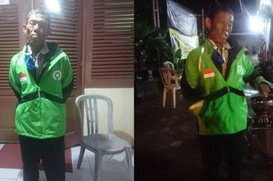

Hot Topic
Happy Family
-
Bahaya Banget, Kalo Bayi Tidur Tengkurap Mending Segera Dibalik deh Mom!
Selasa, 7 April 2020 10:00 -
Family
Katanya sih Ga Boleh Memotong Kuku Bayi Sebelum 40 Hari, Emang Beneran Bahaya?
Selasa, 7 April 2020 07:00 -
Family
Udah Tau Pola Asuh Kekinian RIE Parenting Belum? Cocok nih untuk Orangtua Millennial!
Senin, 6 April 2020 13:00
Beauty Plus
-
Tetap Gunain Makeup saat Olahraga? Eits, Ini nih yang Bisa Terjadi pada Kulitmu
Selasa, 7 April 2020 06:00 -
Beauty
Ryujin ITZY Pakai Crop Top dari Daleman Seharga 2,3 Juta! Nggak Mending Buat Nyicil Tanah Aja Nih?
Senin, 6 April 2020 18:28 -
Beauty
10 Potret Jennie BLACKPINK Pakai Tas Seharga Ratusan Juta! Udah Kayak Chanel Berjalan Aja Nih
Senin, 6 April 2020 17:37 -
Beauty
Gak Kalah Mulus dari Cewek, 10 Idol Cowok Ini Justru Kulitnya Seputih Susu
Senin, 6 April 2020 15:51
Showbiz
-
Kece Abis! Gak Cuman Shandy Aulia, Marsha Aruan juga Bersih-Bersih Pakai High Heels
Selasa, 7 April 2020 09:51 -
D-stories
Ini Potret Kesibukan Azis Gagap Setelah Keluar dari OVJ, Bikin Salut!
Selasa, 7 April 2020 07:47 -
D-stories
7 Foto Cosplay Ratna Sari Dewi Janda Presiden Soekarno, Jadi Tom & Jerry Sampai Maleficent!
Senin, 6 April 2020 22:18
Belanja Yuk
-
Anti Norak, Dijamin Kamu Bakal Tampil Elegan dan Memukau Kalau Pakai Aksesori Lokal Ini, Cobain deh!
Selasa, 7 April 2020 08:55 -
Beauty
Yuk Cobain Skin Care Lendir Siput, Dipercaya Ampuh Hilangkan Bekas Jerawat Sama Cewek-Cewek Korea!
Senin, 6 April 2020 21:40 -
Beauty
Nggak Cuma Bisa Bersihin Tapi Juga Melembabkan, Paling Enak Emang Pakai Milk Cleanser!
Senin, 6 April 2020 20:49 -
Beauty
Makin Lengkap, IMPLORA Ngeluarin Enam Warna Lipstick Baru yang Tetep Aman Di Kantongmu!
Senin, 6 April 2020 18:00
Menyentuh Hati
-
 Udah Susah Payah Antar Pelanggan sampai 230 KM, Ojol Ini Malah Nggak Dibayar! Tega Banget
Selasa, 7 April 2020 06:00 -
D-stories
Keranjang Kehidupan, Cara Kelompok Penduduk Ini Saling Bantu Saat Karantina COVID-19
Senin, 6 April 2020 22:12 -
D-stories
Tak Bisa Sekolah Karena Corona, Anak Ini Menangis Pilu Rindukan Guru dan Temannya
Senin, 6 April 2020 20:05 -
D-stories
Potret Sedih Profesi Badut Kala Pandemi, Harus Tetap Menari di Tengah Mall yang Sepi
Senin, 6 April 2020 19:37
Kuliner Unik
-

Restoran Ini Bikin Pelanggan Kena Serangan Jantung, Tapi Kok Tetep Ramai Ya?
Selasa, 7 April 2020 08:51 -
Food
Yuk Intip Kemewahan dan Keunikan Padang Petirnya Atta Halilintar, Ada Peta Indonesianya!
Senin, 6 April 2020 20:05
Serem, Tau!
-
Dituduh Menularkan Virus Corona, Dokter Ini Dibunuh oleh Pacarnya Sendiri
Selasa, 7 April 2020 09:18 -
D-stories
Tersinggung Sering Dikata-katain dan Tak Dihormati, Pria Ini Akhirnya Bunuh Istrinya Sendiri!
Senin, 6 April 2020 21:12